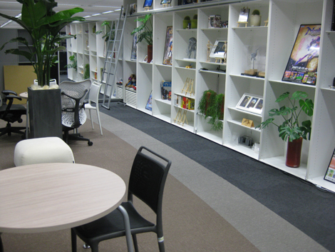
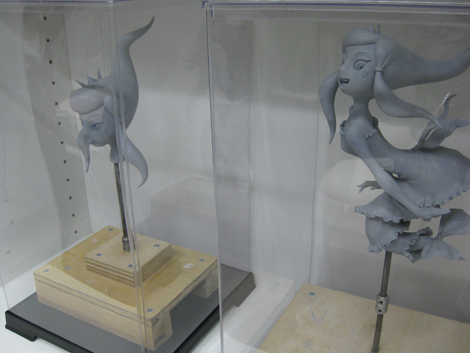
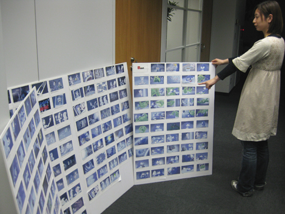
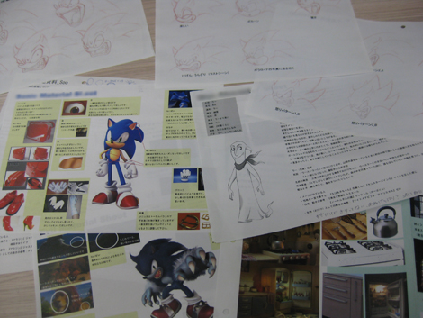
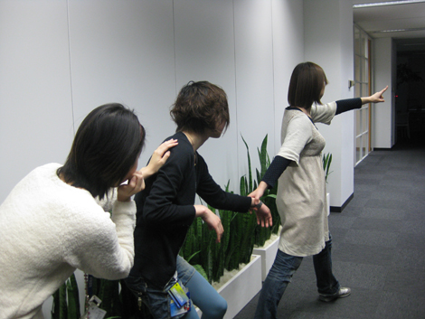

『Night Of The Werehogを、VE研からハミだし！(前編)』
2009年02月27日
皆さんこんにちは！ マツバラです！
当ブログではおなじみ！
SWA外伝短編ムービー「ナイト・オブ・ザ・ウェアホッグ」が……
3月1日から「キッズステーション」で
放映されることになりました～！
詳細はこちらです！ わーわー！
…………。
映画館へ行けなかった方も、
もう一度見たい方も、是非……
って、あれ？
ヨシノ、どうしたの？
考えてみたらさ、
私たち、このムービーについて、
あんまり知らないなあと思って。
へっ！？
どういう意味？
このムービーって
私たちが所属するCS2研じゃなくて
VE研で作ってるでしょ。
うん！
『SWA』のOPとかのムービー作ってくれてる部署だよね！
『SWA』のOPムービーを作った流れで
外伝ムービーを作りはじめた、って聞いたけど
どんなものを作ってるのかは謎だったなあ……
『SWA』のOPとかは
すっごいキレイで評判いいから
そのVE研がオリジナルで『SWA』ムービーを
作ってるって聞いたときは嬉しかったな～！
はじめて見たときは、
天からの贈り物かと思ったよ！
ソニックきゅんはかっこよくて、チップはキュートで……
気になる。
どうやって作ったんだろう、アレ。
興味あるよね！
ちょこっとハミだしてくれないかなあ！
よし。
VE研には知り合いの女子スタッフの辻下さんがいるから
電話して聞いてみよう。
(プルルルル……)
もしもし、ツージー？
電話先のVE研スタッフ、辻下(以下、辻下) ： つ、つーじー？(笑)
えー、ヨシノです。
「ナイト・オブ・ザ・ウェアホッグ」のことなんだけど……
辻下 ： うん。何？
アレって、どうやって作ったの？
ブログのネタにしたいから、軽くちょこっとハミだして。
ちょっと、ヨシノ！
その言い方はストレートすぎるって！
辻下 ： …………。
……？
辻下 ： じゃあ、今から、VE研に来られる？
そこで、いろいろ教えてあげるよ。
はーい。
よっしゃー、取材アポ、ゲットー。
わーい！ VE研ってどういうところかなあ！
楽しみ～！
そして2人で、セガVE研のフロアへ……

辻下 ： あ、来たね。2人とも。
やっ、ツージー。
色々話を聞かせてもらいに来ました☆
15分くらいでさくっと終わるから、よろしく！
辻下 ： …………。
それにしても、VE研っておしゃれだね～！
同じセガでも別世界ってかんじ！
……おや。
なんか、見覚えのある姿が……

辻下 ： 「ナイト・オブ・ザ・ウェアホッグ」ムービー中に出てきた、
幽霊の女の子の模型だよ。
そういうの作って3Dモデル作るときの資料とかにするの。
ほう。
この女の子、可愛かった！
顔とかデザインだけじゃなく、動きとか、
わがままなお姫様って感じの性格が！
あのムービーって、台詞は無いのに、
キャラ立ってるよね。
ソニックやチップ以外のキャラクターも。
辻下 ： じゃあ、会議室で話そうか。
2人とも、こっち来て。

わっ、何これ！？
辻下 ： 会議で使った、ムービーのコンテだよ。
一枚一枚のコマが切り張りできるようになってて、
そのコマを並べ替えたり抜いたり追加したりしながら、
どういうシーン構成にしようか話し合うの。
ほう。
いろいろ決まるまで
どのくらいかかったの？
辻下 ： ストーリーとシーン構成が決定して、
実際の制作がスタートするまで、1年くらい。
いちねん！？
うわ。 はるかに想像越えてきたよ。
辻下 ： その1年の間に、こういうものも作ったよ。

設定資料……？
ソニック、チップ、3人の幽霊……
ていうか、細かっ！
幽霊たちの名前はもちろん、性格、嗜好、生前のこと、
幽霊になった原因まで書いてある！
しかも、ブ厚っ！
何ページあるの、これ！
辻下 ： それでも、ほんの一部だよ。
性格や趣向はキッチリ細部まで決めておけば
キャラクターの動きをつけるときに
ふとしたクセや演技わけによる深みが出るからね。
あっ！ そっか、こういうとこまで決めてるから
台詞の無いムービーでも
キャラクターの性格とか存在感がすごく伝わってきてたんだ！
服の写真とか、家具の写真とかが多いのは、何で？
辻下 ： それは材質や細部の資料。
例えば、ムービーに登場する女の子幽霊が着る服の材質はコレで、
透け方はこの程度で、こういう動かし方をする……っていうイメージ。
そ、そんなところまで決めるの！
辻下 ： 50人以上のスタッフが同じものを作るんだから、
はっきりしたイメージを用意して、共有しなきゃいけないからね。
方向性がブレないように、土台を固める作業は重要でしょ。
ツージー、パネエ！
いやー、いいものをハミだしてもらいました。
うん！
突然ごめん、ありがとう！
じゃあ、今回はこれで……
辻下 ： 待って。まだ終わってない。
へっ？
辻下 ： 今回のムービーはすごく思い入れがあるの！
60人からなるスタッフの情熱と苦労が詰まってるし！！
今までゲームムービーを手がけてきたVE研が
初めて作ったオリジナルムービーで、
VE研にとっても大きなチャレンジだし！
う、うん。
辻下 ： だから、「軽くちょこっと」ハミだすなんて許さない。
ハミだすからにはじっくりねっとり取材して
徹底的に残り一滴までハミだすのよ！
あっ、何気に電話を根に持ってたんだねツージー！

辻下に引きずられていく、マツバラとヨシノ
辻下 ： 来なさい！ 次はアニメーターの席を案内するから！！
そこでこのムービーに対する
私たちのあふれだす情熱や苦労を理解しなさい！
ヒー！！
な、なんだか、
凄いことになってきた……！
ソニックのショートムービー 『Night Of The Werehog』
2009年3月1日よりキッズステーションにて放映決定！詳しくはこちらのサイトをご覧下さい。
日時: 2009年02月27日 19:30 | パーマリンク


 ソニックを愛する、元気な『SWA』2年目プランナー。
ソニックを愛する、元気な『SWA』2年目プランナー。 マイペースな『SWA』2年目プランナー。
マイペースな『SWA』2年目プランナー。
 ご意見・ご要望はこちら
ご意見・ご要望はこちら RSS
RSS